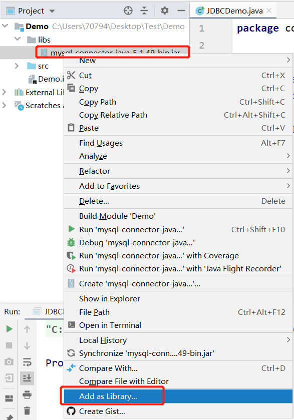

JDBC概述
之前我们学习了JavaSE，编写了Java程序，数据保存在变量、数组、集合等中，无法持久化，后来学习了IO流可以将数据写入文件，但不方便管理数据以及维护数据的关系；
后来我们学习了数据库管理软件MySQL，可以方便的管理数据。
那么如何将它俩结合起来呢？即Java程序<==>MySQL，实现数据的存储和处理。
那么就可以使用JDBC技术。
JDBC：Java Database Connectivity，它是代表一组独立于任何数据库管理系统（DBMS）的API，声明在java.sql与javax.sql包中，是SUN(现在Oracle)提供的一组接口规范。由各个数据库厂商来提供实现类，这些实现类的集合构成了数据库驱动jar。

即JDBC技术包含两个部分：
java.sql包和javax.sql包中的API
因为为了项目代码的可移植性，可维护性，SUN公司从最初就制定了Java程序连接各种数据库的统一接口规范。这样的话，不管是连接哪一种DBMS软件，Java代码可以保持一致性。
各个数据库厂商提供的jar
因为各个数据库厂商的DBMS软件各有不同，那么内部如何通过sql实现增、删、改、查等管理数据，只有这个数据库厂商自己更清楚，因此把接口规范的实现交给各个数据库厂商自己实现。
导入MySQL驱动
在使用代码连接MySQL数据库时，需要先导入MySQL为Java语言编写的驱动。
MySQL驱动下载地址：https://downloads.mysql.com/archives/c-j/
驱动版本与MySQL服务器以及JRE,JDK的对应关系。
Connector/J version MySQL Server version JRE Required JDK Required for Compilation Status 5.1 5.61, 5.71, 8.01 JRE 5 or higher1 JDK 5.0 AND JDK 8.0 or higher2, 3 General availability 8.0 5.6, 5.7, 8.0 JRE 8 or higher JDK 8.0 or higher2 General availability. Recommended version. 下载对应版本的Connector并解压，得到
mysql-connector-java-5.1.49-bin.jar包。在项目中新建一个
libs的文件夹，将解压后的jar包复制到这个文件夹中。打开IDEA，右键jar包，选择
add as library，将jar包添加到library
